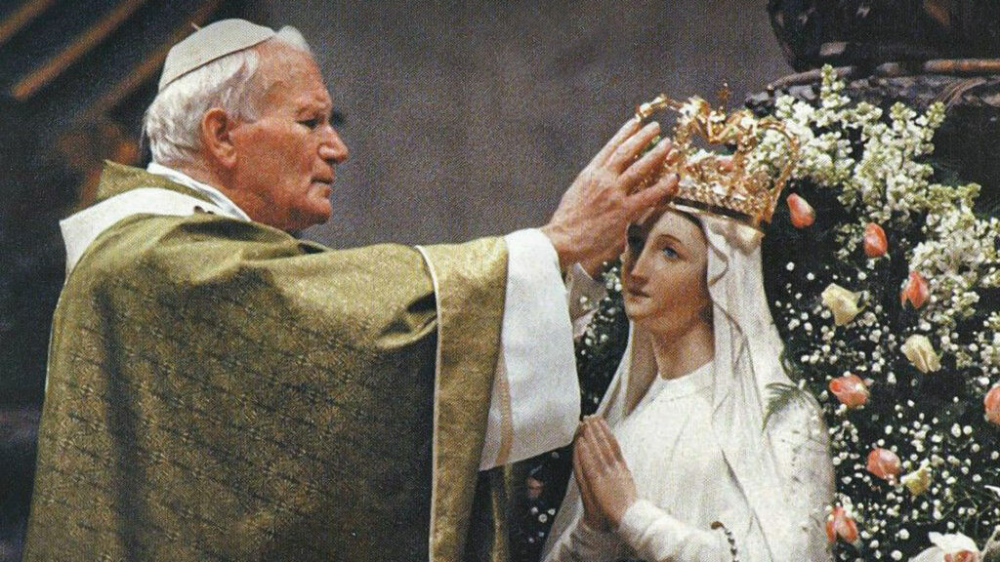
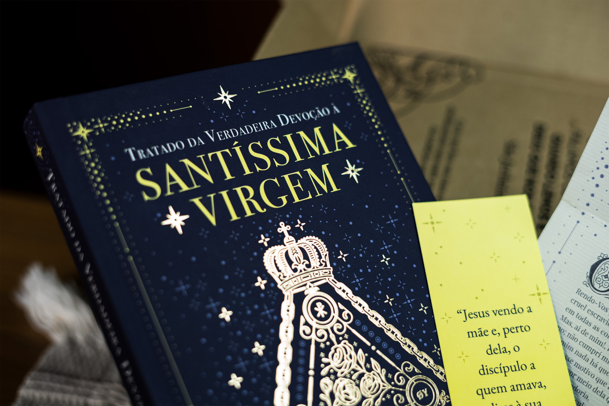
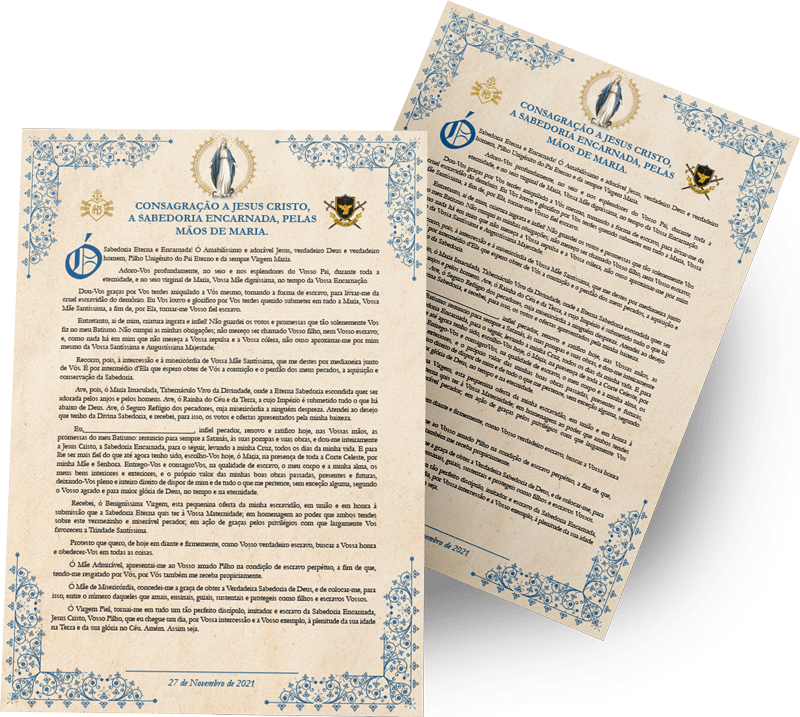

⚠️ Este site está disponível apenas para visualização em dispositivos móveis.
Tratado da Verdadeira
Devoção À Santíssima Virgem
Descubra o que é a consagração a Nossa Senhora pelo método de São Luís, qual o seu propósito, e entenda por que e de que forma realizar essa entrega espiritual.
Ao longo da história da Igreja, grandes santos, como Santo Agostinho, São Domingos, Santo Afonso Maria de Ligório, e muitos outros, escreveram sobre Nossa Senhora e sua importância para a Igreja e para a vida dos cristãos. Apesar de a consagração à Virgem Maria ser uma devoção antiga, que remonta aos primeiros séculos da Igreja, São Luís Maria Grignion de Montfort deu a ela um método específico.
O que é a consagração a Nossa Senhora?
Por ser Maria aquela que mais se conformou a Cristo, a perfeita consagração a Ele só se dá por meio da consagração à Santíssima Virgem. 1 Esta devoção, de acordo com São Luís, “consiste em se dar a si mesmo a Maria, inteiramente, a fim de que pertençamos inteiramente a Jesus por meio dela.” 2 Pois Nossa Senhora é “o caminho mais seguro, fácil, curto e perfeito de se abordar Jesus.” 3
Nesse método de consagração, também conhecido como “escravidão de amor a Nossa Senhora“, entregamos completamente a Maria tudo o que somos e temos, confiando inteiramente em Suas mãos santas. Assim, “entreguemos a Jesus e a Maria todos os nossos pensamentos, palavras, ações e sofrimentos, em todos os momentos de nossas vidas, sem exceção. Assim, pois, seja lá o que fizermos, estejamos nós acordados ou dormindo, a comer ou a beber; façamos nós trabalhos importantes ou desimportantes, há de ser sempre verdade que tudo é feito por Jesus e Maria (…) ao menos que explicitamente nos recusemos a dá-las.” 4
Desse modo, tal entrega nos permite pertencer de maneira mais perfeita a Jesus, a fim de crescer cada vez mais na graça divina e alcançar a perfeita união com Cristo. Sem dúvida, a consagração não dispensa os nossos esforços para vencer as tentações e corresponder à vontade de Deus; no entanto, é um caminho mais fácil e seguro para chegarmos à plena união com Cristo.
Quem foi São Luís?
São Luís Maria Grignion de Montfort nasceu em 31 de janeiro de 1673 em Montfort-sur-Meu, na Bretanha, França. Sendo sua família católica, cresceu em um ambiente de muita fé e, desde cedo, ajudava os pobres e doentes de sua comunidade e demonstrava grande devoção à Virgem Maria.
Após a sua ordenação, em 1700, São Luís Maria dedicou sua vida ao apostolado e à pregação missionária em diferentes regiões da França. Ele tinha uma profunda espiritualidade mariana e buscava incentivar as pessoas a crescerem em devoção a Nossa Senhora e a Jesus Cristo.
Sendo assim, em 1712, ele fundou a Companhia de Maria, também conhecida como Montfortianos, a fim de promover a devoção mariana e a evangelização. A congregação cresceu e se espalhou por diversas partes do mundo. Nesse mesmo ano, o santo também escreveu sua obra mais conhecida, o “Tratado da Verdadeira Devoção à Santíssima Virgem”, no qual ele apresenta o método de consagração total a Nossa Senhora.
Por fim, São Luís Maria faleceu em 28 de abril de 1716 e foi canonizado em 1947, sendo reconhecido como um exemplo de fervorosa devoção mariana e dedicação ao serviço de Deus e da Igreja.
Por que fazer a consagração a Nossa Senhora?
São Luís apresenta, no Tratado da Verdadeira Devoção, oito motivos pelos quais esta devoção é a mais apropriada. 5
1. Por meio desta devoção nos damos completamente a Deus
Ao oferecer tudo a Jesus, tornamo-nos servos mais ricos e nobres que qualquer monarca que não sirva a Deus, pois tal entrega liberta-nos de qualquer apego e nos permite oferecer a Deus até mesmo as nossas boas obras.
2. Esta devoção nos ajuda a imitar Cristo
Assim como Jesus passou trinta anos de Sua vida submisso à Maria, aquele que se consagra por este método segue este exemplo de Cristo, entregando toda a sua vida nas mãos dela. Dessa forma, imitamos Cristo na humildade e confiamos na intercessão de Nossa Senhora para receber por meio dela as graças e dons que Deus deseja conceder, sobretudo a graça de dar a Ele a glória devida.
3. Esta devoção obtém muitas bênçãos de Nossa Senhora
Por meio da entrega feita nesta consagração, Maria, que é uma Mãe generosa, apresenta nossas ofertas a Jesus, e Ele, por amor a ela, aceita nossas ações — mesmo que sejam pequenas e imperfeitas. Pois ela compartilha conosco suas qualidades, adorna nossas boas obras com seus próprios méritos e virtudes, tornando-as mais belas e aceitáveis aos olhos de Deus.
4. Esta devoção é um meio excelente de se dar glória a Deus
Quando nos consagramos inteiramente a Nossa Senhora, podemos confiar que todas as nossas ações, palavras e pensamentos são usados para a glória divina — a menos que expressemos o contrário. E quem melhor que a Virgem Maria sabe onde está a glória de Deus e trabalha para glorificá-lO? Assim, ao entregarmos o valor de nossas boas obras a Nossa Senhora, ela as utiliza para promover a maior glória de Deus.
Saiba mais sobre o culto que devemos prestar a Nossa Senhora neste vídeo:
5. Esta devoção leva à união com Nosso Senhor
São Luís apresenta o caminho desta devoção como o mais suave, curto, perfeito e seguro para se chegar a Jesus. Embora seja possível alcançar a união divina por outros caminhos, eles são mais árduos, enquanto esta devoção à Virgem Maria é um caminho mais doce, onde Ela está sempre presente para guiar, fortalecer e sustentar seus servos fiéis. Ao se consagrar a Maria, o devoto encontra um atalho para chegar a Jesus, caminhando com mais facilidade, alegria e velocidade.
6. Esta devoção dá-nos grande liberdade de espírito
Os fiéis que se consagram à Maria, como escravos de Jesus, experimentam a liberdade dos filhos de Deus, livrando-se de escrúpulos e medos servis que os poderiam limitar. Essa devoção inspira um amor generoso e filial, abre os corações para uma confiança santa em Deus e permite que os devotos encontrem paz na alma, assim como o exemplo de Madre Inês de Jesus 6, que foi liberta de grande angústia espiritual por meio da consagração.
7. Esta devoção é de grande ajuda ao próximo
Ao consagrar-se a Maria, os devotos expressam um amor espantoso ao próximo, uma vez que oferecem a Ela suas boas obras, pensamentos e sofrimentos, para que sejam usados em favor da conversão dos pecadores e da libertação das almas do Purgatório. Assim, quando passam pelas mãos purificadoras de Maria, nossas boas obras se tornam mais eficazes e poderosas para alcançar tal fim. Por isso, através dessa devoção, mesmo com atos ordinários, um fiel pode, na morte, descobrir que libertou almas do Purgatório e converteu pecadores, alcançando alegria e glória eterna.
8. Esta devoção é um meio maravilhoso de perseverança
A devoção à Santíssima Virgem é um meio maravilhoso de perseverança, pois confiando tudo a ela, podemos evitar muitas quedas. Ela é como uma âncora segura que nos mantém firmes, protege nossas graças e virtudes e impede que nossos esforços sejam perdidos. Ao confiar em Maria, somos protegidos do mal e recebemos a graça de perseverar na prática da virtude até o fim.
Qual é a finalidade da consagração a Nossa Senhora?

A finalidade da consagração a Nossa Senhora é nos entregarmos inteiramente a ela para pertencermos inteiramente a Jesus por meio dela. 2 Para isso, é preciso entregar tudo a Ela, sem reservas: nossos corpos, almas, faculdades, bens materiais, méritos, virtudes e boas ações passadas, presentes e futuras. 2
Tudo é dado a Maria, para sempre, sem esperar nada em troca além da honra de pertencer a Jesus por meio dela e em união com ela. É um ato de total confiança e abandono nas mãos generosas e graciosas da Virgem, que nos leva a uma vida mais profunda de comunhão com Jesus e à busca da santidade.
O que devo fazer para me consagrar?

O primeiro passo para se consagrar a Nossa Senhora pelo método de São Luís Maria Grignion de Montfort é a leitura do “Tratado da Verdadeira Devoção à Santíssima Virgem”, escrito pelo próprio santo. Por meio dessa leitura, é possível compreender de forma mais completa e profunda a devoção mariana proposta pelo autor.
Além disso, há uma preparação interior para se observar antes da consagração. São práticas de oração propostas por São Luís, a fim de preparar o devoto para viver de maneira verdadeira tudo o que envolve a consagração. A preparação começa com doze dias empregados em desapegar-se do espírito do mundo. As orações destes dias são o “Vem, Espírito Criador” e o “Ave Maris Stella”, escrito por São Bernardo de Claraval.
Em seguida, os exercícios espirituais se estendem por mais três semanas antes do dia da consagração de fato. A primeira semana tem como objetivo adquirir o conhecimento de si mesmo; a segunda, o conhecimento da Santíssima Virgem e, na última, emprega-se em adquirir o conhecimento de Jesus Cristo. Além disso, cada uma conta com orações e ladainhas para serem feitas diariamente.
O que fazer no dia da consagração?

Ao final das três semanas preparatórias, após realizar um bom exame de consciência, seguido da Confissão, e participar da Santa Comunhão, você poderá recitar o ato de consagração a Jesus por meio de Maria, como escravo de amor — realizando assim a sua consagração.
São Luís Maria recomenda oferecer, neste dia, algum tributo a Jesus e à Maria, a fim de manifestar penitência ou submissão. Pode ser um jejum, uma esmola, uma oração ou qualquer outro ato de devoção, desde que seja oferecido com amor e de bom grado.
E, depois, renová-la uma vez ao ano, ao menos, na mesma data, após seguir todos os mesmos exercícios preparatórios. Também podemos renovar a nossa devoção e consagração todos os dias dizendo: “Sou todo vosso, e tudo quanto tenho é de Vós, ó querido Jesus, por meio de Maria, Vossa santa Mãe” 7
Dúvidas sobre a Consagração a Nossa Senhora
O que é a consagração à Nossa Senhora pelo Método de São Luís de Montfort?
É um ato de entrega total de si mesmo(a) a Maria, como meio para se consagrar a Jesus Cristo. Entregar-se inteiramente à Maria e, por Ela, a Jesus, e em procurar fazer todas as ações com Maria, em Maria, por Maria e, para Maria.
Quem foi São Luís de Montfort e qual a importância dele nessa devoção mariana?
São Luís de Montfort foi um sacerdote e teólogo francês, conhecido por sua profunda devoção à Nossa Senhora. Ele foi responsável por sistematizar a devoção à Virgem Maria que já existia entre os fiéis, que os papas já pregavam e os santos já viviam.
Quem pode se consagrar?
Todos os batizados que tenham vida sacramental, tenham lido o Tratado e se preparado de acordo com o que se propõe no método de São Luís.
Como é feita a preparação para a consagração?
É preciso em primeiro lugar ler o Tratado para entender do que se trata a Verdadeira Devoção. Depois, passa-se por um período de 30 dias de preparação, divididos em 12 dias preliminares dedicados ao desapego do mundo, seguidos por três períodos de 6 dias, cada um deles dedicado ao conhecimento de si mesmo, de Nossa Senhora e de Nosso Senhor. Ao final destes dias de preparação, faz-se a consagração, recitando publicamente o ato de “Consagração de si mesmo a sabedoria encarnada”. As orações preparatórias, bem como meditações para os períodos, serão fornecidas gratuitamente.
Se eu falhar em um dos dias da preparação, ainda posso me consagrar?
Sim, a recomendação é que se prossiga com a preparação. Uma sugestão, mas que também não é obrigatória, é a realização das orações do dia perdido no dia seguinte, junto com as orações próprias dele.
O que devo fazer no dia da consagração?
Deve-se oferecer um tributo a Nosso Senhor e Nossa Senhora, em penitência por nossas faltas e em sinal de dependência Deles. O tributo pode ser: jejum, penitência ou esmola. Deve-se usar um sinal físico da Consagração. São Luís recomenda o uso de cadeias, mas elas podem ser substituídas por uma medalhinha da Virgem, por exemplo. Deve-se escrever a fórmula da Consagração a mão em um papel, assinando-a. Deve-se estar sem pecado mortal, confessando-se anteriormente. Deve-se comungar no dia da consagração.
Sou obrigado a usar as correntes de ferro?
Não. São Luís recomenda o uso das pequenas cadeias de ferro pelo seu valor simbólico, por remeterem verdadeiramente à escravidão que se propõe a viver. Porém, elas podem ser substituídas por algum outro sinal visível compatível com o seu estilo de vida, podendo ser uma medalha, um escapulário, um anel, etc.
É necessário o acompanhamento de um sacerdote durante o processo?
Não é estritamente necessário, embora o acompanhamento de um bom sacerdote seja sempre proveitoso. Como sabemos que nem todos podem ter um sacerdote acessível, vamos disponibilizar meditações gravadas por um padre estudioso da Consagração a Nossa Senhora pelo Método de São Luís.
Posso fazer a consagração sozinho(a) ou preciso participar de um grupo?
Você pode fazê-la sozinho ou em grupo. Nem sempre há grupos disponíveis em todas as cidades. Por isso, te convidamos a fazer parte do nosso grande grupo virtual.
Qual é a data ideal para fazer a consagração?
É recomendado que a consagração seja feita em alguma data mariana. Por isso, nós escolhemos o dia 12/10, festa de Nossa Senhora Aparecida. Mas, caso não consiga fazer a sua consagração nessa data, pode escolher alguma outra data mariana.
A consagração a Nossa Senhora me obriga a me afastar de outras devoções ou práticas religiosas?
Não. Ao contrário, a consagração não só não obriga a afastar-se, como pode ser conciliada e fortalecer outras devoções.